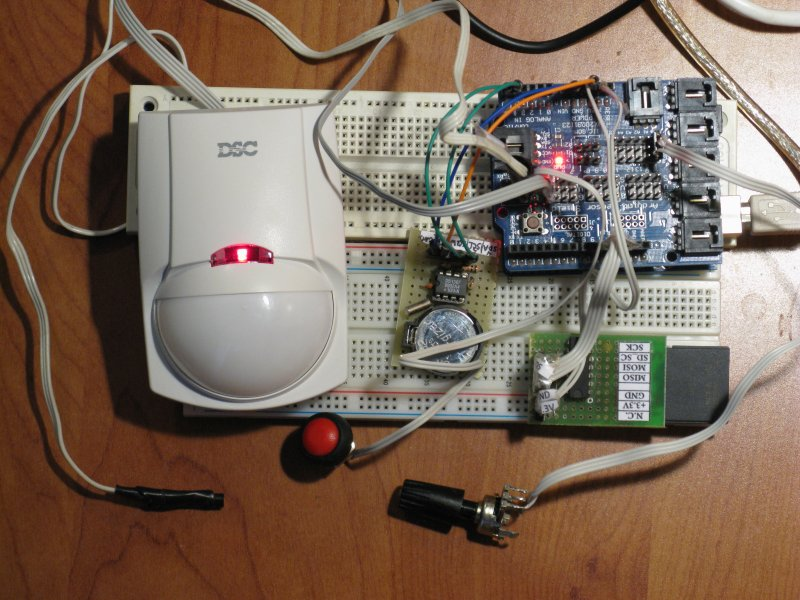

Example of usage
Logger with attached motion sensor, temperature sensor, push button and potentiometer:

Communication with Logger via terminal:

The purpose of this device is to record data from motion sensors, temperature sensors (based on DS18B20 chip) and analog input to an SD card in CSV (comma-separated values) format so you can easily export the data to Microsoft Excel or LibreOffice Calc
This Logger also provides easy access to data and configurations through terminal software on the go.